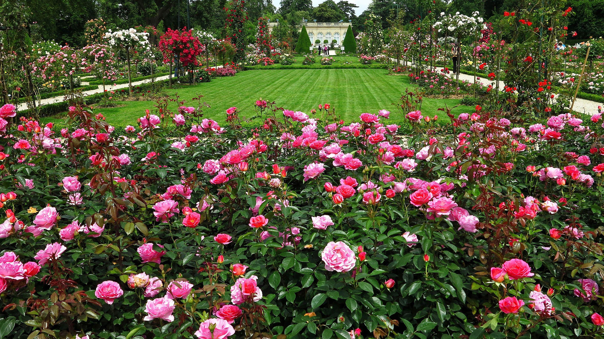
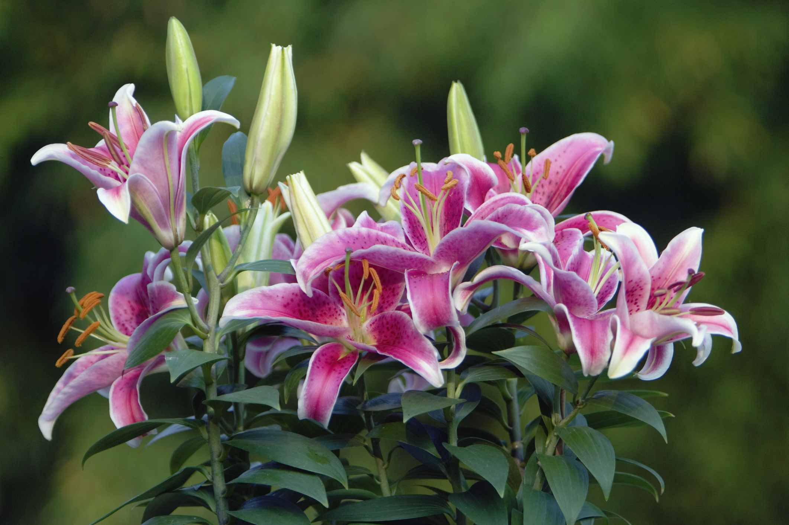

A rose garden is a place where many varieties of roses are grown. It is known for its colorful flowers and pleasant fragrance. Visitors enjoy walking through the garden and admiring its beauty. Rose gardens provide a peaceful environment and attract nature lovers from different places.
A sunflower garden is a place where many varieties of sunflowers are grown. It is known for its bright yellow flowers and tall stalks. Visitors enjoy walking through the garden and admiring its beauty. Sunflower gardens provide a peaceful environment and attract nature lovers from different places.

A lavender garden is a place where many varieties of lavender are grown. It is known for its fragrant flowers and calming scent. Visitors enjoy walking through the garden and admiring its beauty. Lavender gardens provide a peaceful environment and attract nature lovers from different places.
Welcome to our Garden, a place where nature's beauty blooms in every corner. Our garden is home to a wide variety of flowers, carefully nurtured to create a colorful and refreshing environment for visitors. We are committed to preserving different species of flowers and promoting a love for nature among people of all ages. Whether you are looking for a peaceful walk, a beautiful photography spot, or simply a place to relax, our Garden offers a memorable experience surrounded by the fragrance and elegance..!
1234567890
Garden@gmail.com
At Garden, we're committed to providing an exceptional shopping experience with an easy to use website, fast shipping and outstanding customer service.!